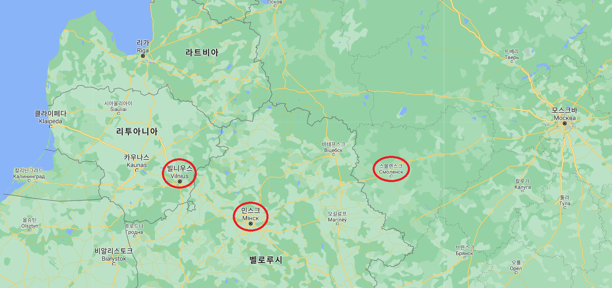
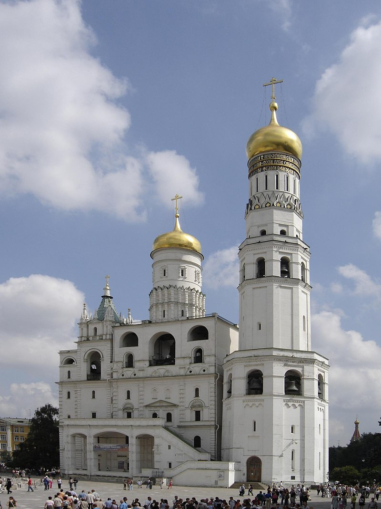
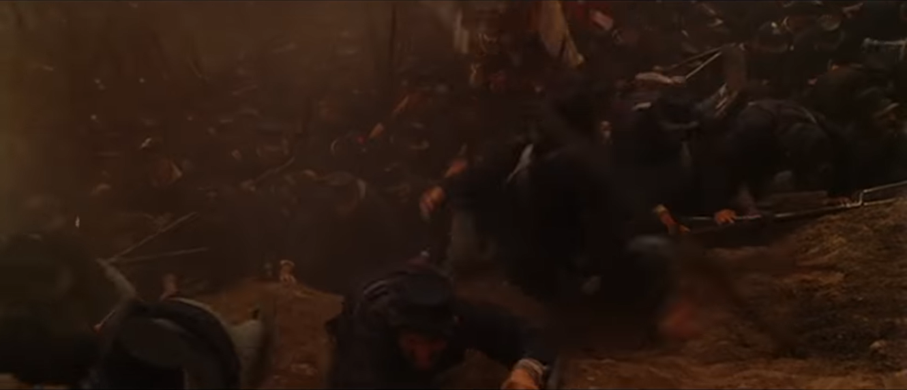
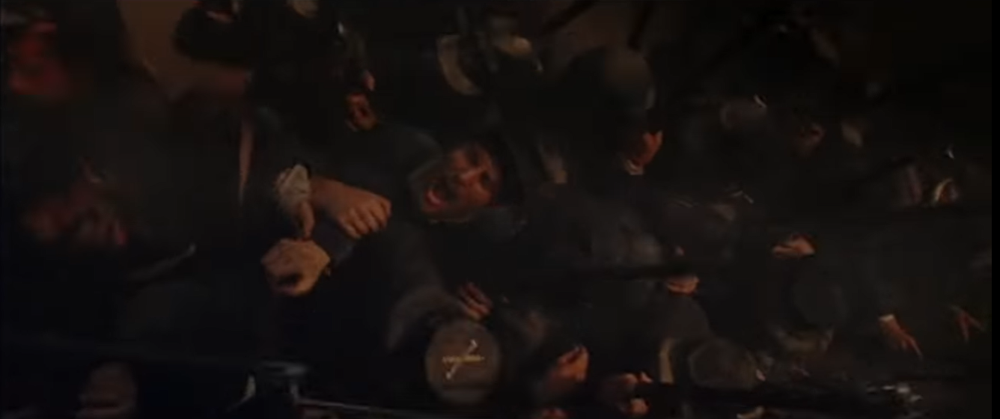
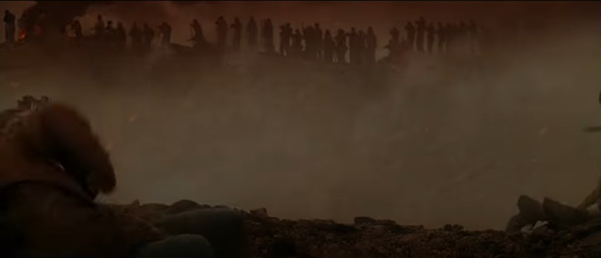
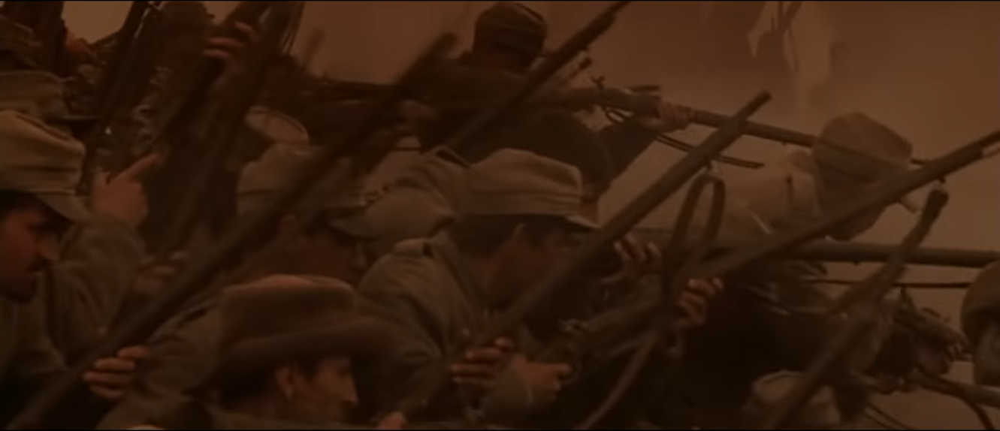

Go back ! Go back ! - 모스크바 철수 계획 (1)
게시: 2021-04-05T06:30:38+09:00
흩날리는 첫눈을 보며 갑자기 정신을 차린 나폴레옹은 이렇게 말했습니다. "서두르자. 20일 안에 겨울 숙영지로 들어가야 한다." 그런데 겨울 숙영지라니, 그게 어디였을까요? 파리와의 연락망을 유지할 수 없는 모스크바가 겨울 숙영지가 될 수 없다는 것은 분명했습니다. 보로디노 전투 이전, 나폴레옹이 생각하던 겨울 숙영지는 크게 3곳이었습니다. 스몰렌스크, 빌나, 그리고 민스크였습니다. 그 중 스몰렌스크는 벨로루시(백러시아)와 러시아의 경계를 이루는 러시아 본토의 관문으로서, 아직 여기에는 겨울 숙영을 위한 물자 비축이 부족한 상태였습니다만, 모스크바에서 불과 12일 정도만 행군하면 도달할 수 있는 가까운 위치였습니다. 그에 비해 빌나와 민스크는 사실상 원정 출발점에 해당하는 지점으로서, 스몰렌스크부터 다시 10일 이상을 걸어야 하는 거리였지만 대신 그동안 꽤 많은 물자를 비축해놓은 곳이었습니다. 또 빌나와 민스크는 엄격히 이야기해서 러시아가 아니라서, 나폴레옹에게 우호적인 폴란드-리투아니아 주민들이 많이 사는 우호 지역이었고 또 나폴레옹의 본진이라고 할 수 있는 폴란드와 독일 등지에서 보충병과 추가 보급품을 쉽게 날라올 수 있는 곳이었습니다.

(리투아니아의 수도 빌나, 그리고 벨로루시의 수도 민스크, 그리고 러시아의 관문 스몰렌스크의 위치입니다. 셋 중 어디가 목적지가 되든 일단 스몰렌스크까지는 가야 했습니다.)
문제는 셋 중 어디냐가 아니라 빨리 출발해야 한다는 것이었습니다. 아직 치명적으로 늦었다고 할 상황까지는 아니었지만, 분명히 이미 늦은 상태였거든요. 게다가 빌나든 민스크든, 일단 스몰렌스크는 반드시 거쳐야 하는 곳이었으므로 당장 스몰렌스크를 1차 목적지로 삼고 당장 출발해야 했습니다. 그렇다고 무작정 허둥지둥 철수할 수도 없었습니다. 무엇보다, 아군의 눈에건 적군의 눈에겐 저 멀리 유럽의 왕들에게건 절대 이 철수가 패퇴로 보여져서는 안되었습니다. 원래 철수 작전이라는 것은 진격 작전보다 훨씬 난이도가 높은 것이었고 아무리 잘 짜여진 철수 작전도 까딱하다간 진짜 패주로 이어지기 쉬웠습니다. 그런데 그런 정치적인 쇼우맨쉽까지 발휘해가며 계획을 짜자니 걸리는 것이 한두 가지가 아니었습니다. 먼저, 목적지가 스몰렌스크이든 빌나이든 일단 무조건 짐이 가벼워야 했습니다. 모스크바까지 진격할 때조차도 뒤에서 따라오던 부대가 '패주하는 러시아군보다 진격하는 프랑스군이 버리고 가는 짐짝과 마차가 더 많다'라고 평가할 정도로 나폴레옹의 그랑다르메는 수송력에서 많은 문제점을 보였습니다. 그런데 진짜 후퇴할 때는 절대 그런 일이 벌어져서는 안되었습니다. 후퇴하는 길가에 죽은 말과 내버려진 궤짝들이 너저분하게 널려 있다면 가뜩이나 혼란스럽고 풀이 죽은 병사들의 사기를 결정적으로 꺾어놓아 진짜 패주로 이어질 수도 있기 때문이었습니다. 짐을 가볍게 하는 방법은 딱 2가지였습니다. 하나는 꼭 필요한 짐을 미리 보내놓는 것이고, 다른 하나는 불필요한 짐을 버리고 가는 것이었습니다. 그런데 이것이 또 쉽지 않았습니다. 그리고 그것 또한 나폴레옹의 잘못 때문이었습니다. 정상적인 작전이었다면 그랑다르메 진격의 동쪽 끝이었던 모스크바는 최전선의 베이스 캠프 정도의 역할을 했을 것입니다. 그리고 그 중간중간에 병참기지 등을 든든히 갖춰야 했겠지요. 아무리 나폴레옹이 현지 조달을 중시했다고는 하지만 나폴레옹도 항상 교통 요지에 위치한 요새마다 병력을 배치하여 후방을 든든히 했습니다. 그런데 이번 러시아 원정에서 나폴레옹은 모스크바만 점령하면 전쟁이 끝날 거라고 확신했고, 일이 잘 안 풀려도 모스크바에서 겨울을 나겠다고 작정한 나머지, 모스크바를 최전선이 아니라 마치 본거지처럼 여기고 작전을 펼쳤습니다. 덕분에 모스크바에는 인원과 물자가 너무 많았습니다 ! 무기와 탄약도 모두 모스크바에 끌어다 놓은 상황이었고 전리품, 가령 기념품으로 파리에 세우겠다고 이반 대제 종탑에서 뜯어놓은 대형 은도금 십자가도 아직 파리로 보내지 않은 상태였습니다.

(현재의 이반 대제 종탑(Kolokol'nya Ivana Velikogo)입니다. 나폴레옹은 이 종탑 꼭대기의 십자가가 순금으로 만들어진 것이라는 소문을 듣고 뜯어냈습니다만, 뜯어내고 보니 은도금을 한 무쇠였습니다. 그 분풀이도 할 겸 남는 화약 처리도 할 겸 나폴레옹은 모스크바에서 철수할 때 이 종탑을 폭파해버리도록 지시했는데, 의외로 튼튼했던 이 종탑은 그 폭발을 견디고 살아남았습니다. 대신 옆에 있던 예수 부활 교회가 그 폭발에 무너졌다고 하네요.) 당장 심각한 문제가 바로 부상자였습니다. 그때까지 유럽에서 벌어진 모든 전투 중 최대이자 최악의 유혈사태였고, 제1차 세계대전 솜므 전투때까지도 그 사상자 기록이 깨지지 않을 정도로 격렬했던 보로디노 전투에서는 당연히 엄청난 수의 부상병들이 발생했습니다. 정상적인 경우라면 이런 부상병들은 임시 야전병원에 수용했다가 후송을 해야 했습니다. 그러나 여태까지 나폴레옹은 그런 부상병들을 오히려 모스크바로 날라오고 있었습니다. 10월 초가 되어 이제 겨울 생각을 슬슬 할 때가 되자 10월 5일에야 아직도 보로디노 인근에 널려 있던 부상병들을 모스크바가 아닌 스몰렌스크로 후송할 것을 명령했고, 10월 10일에는 모스크바에 몰려 있던 부상병들의 일부를 후송하기 시작했습니다.
   

(이 영상들은 2003년 영화인 'Cold Mountain' 중 피터스버그(Petersburg) 전투 장면입니다. 남북전쟁을 배경으로 한 주드 로와 니콜 키드먼 주연의 이 영화는 하도 출연진이 화려해서 나탈리 포트만이 단역으로 나올 정도이고, 또 영화도 굉장히 재미있습니다. 영화를 한줄 요약하면 '전쟁의 비극'입니다. 윗 장면에서는 공격하는 북군이 거의 절벽에 가까운 언덕에 부딪히자 앞 줄에 선 병사들이 당황하여 'Go back ! Go back !'을 외치지만 뒤에서는 앞의 상황을 모르는 병사들이 계속 몰려와서 빽뺵한 콩나물 시루를 만들어 버립니다. 언덕 위에서는 남군 병사들이 늘어서서 사냥하듯 북군에게 사격을 퍼부어 아비규환이 벌어지고요. 이 전투 영상은 youtu.be/tl-_dWJLd6E 에서 보실 수 있습니다.)
지난 편에서 보셨다시피 프랑스군은 오히려 바로 이전까지 더 많은 병력과 말, 그리고 식량 등을 모스크바로 보내고 있었습니다. 나폴레옹은 첫 눈이 내린 다음 날인 10월 14일에야 더 이상 모스크바로 병력과 물자를 보내지 말고, 모스크바에 있는 부상병들도 후송하라는 명령을 내렸습니다. 이 부상병 후송을 딱 1주일만 더 빨리 시작했어도 수천명의 부상병들이 목숨을 구할 수 있었을 것입니다. 운좋게 10월 초에 후송 명령을 받았던 부상병들을 별다른 훼방을 받지 않고 태평하게 스몰렌스크까지 후퇴할 수 있었습니다. 당시 젊은 보급관으로 일했던 훗날의 대문호 스탕달도 10월 16일에야 부상병들을 데리고 모스크바를 출발했는데, 그는 매서운 날씨에도 매일 면도를 하며 별 어려움 없이 여행을 마칠 수 있었습니다. 이렇게 일단 부상병들부터 후송을 시키되, 움직이지 못할 정도의 중상자들은 따로 방법이 없었습니다. 모스크바 및 보로디노 인근 등에는 그런 중상자들이 대략 1만2천 명 정도가 있었는데, 이들은 모두 그냥 그 자리에 놔두기로 결정되었습니다. 대신 최소한의 의료진과 의약품도 함께 남겨두었습니다. 이건 부상병들을 위해서는 옳은 판단이었습니다. 아직은 몰랐겠지만 어차피 후툇길에서 대부분 죽을 운명이었으니, 차라리 러시아군과 민간인들의 신사도와 동정심에 의존하는 것이 살 확률이 훨씬 높았습니다. 그런데 막상 후퇴 계획을 짜다보니 부상자는 작은 문제에 불과하다는 것이 곧 드러났습니다. Source : 1812 Napoleon's Fatal March on Moscow by Adam Zamoyski